MMDS
DTH
HFC
DTH-PREPAGO
Verificar que el cable modem este encendido y ademas que tipo de conexión tiene el cliente, conexión con el cable de red, wiffi.
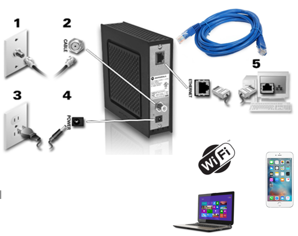
Si vemos que la conexión es por cable de red, hagamos las siguientes pruebas, las diferencia en las versiones de windows casi no varia.
Windows 7
Windwos 10
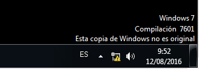
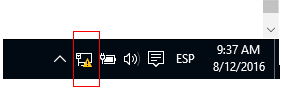
Damos click derecho, en el icono de la conexión, como se ve en la imagen
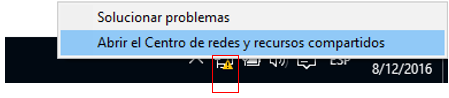
Nos va a abrir la siguiente ventana
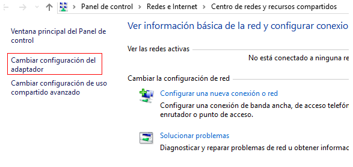
Seleccionamos el adaptador de red de la pc y damos click derecho
Puede mostrarles de esta forma
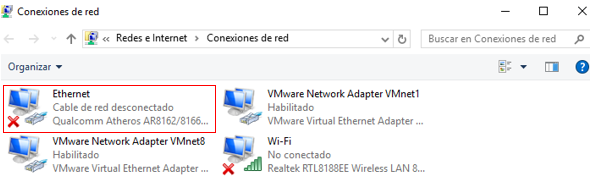
O de esta forma
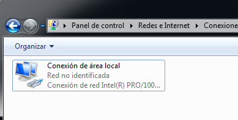
Hacemos click derecho en
Propiedades
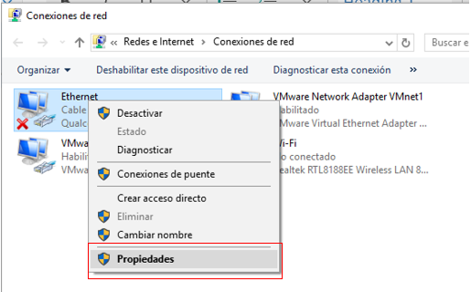
Seleccionamos Protocolo de Internet versión 4, y le damos en propiedades, como indica la imagen ADJ.
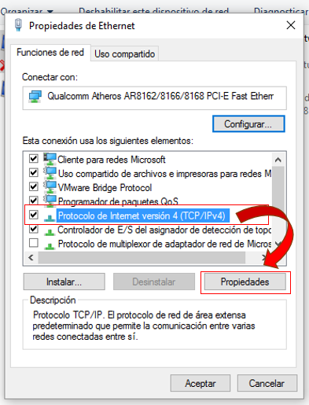
En este paso es importante tener en cuenta que la IP y el DNS tiene que estar seleccionado >>
Obtener una direccion IP automaticamente - Obtener la direccion del servidor DNS automaticamente
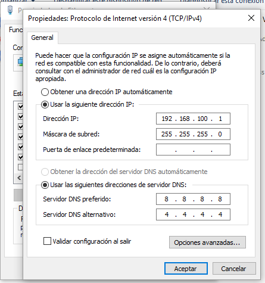
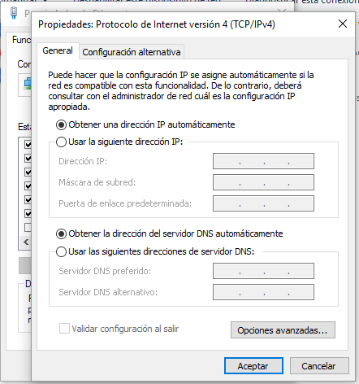
De esta forma tiene que estar la IP y el DNS de forma automática, para que el proveedor TIGOSTAR pueda asignarle la IP dinámicamente
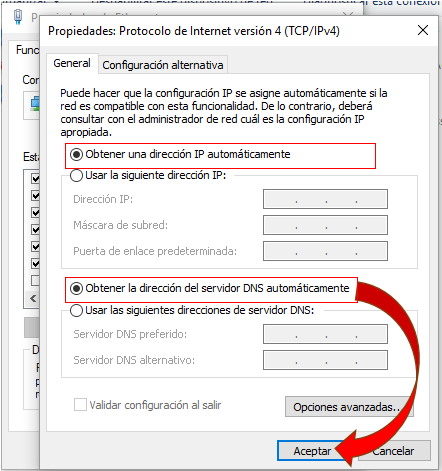
Posterior hacemos click en
Cerrar
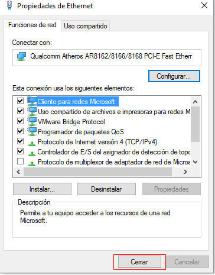
Y como verán ya se le ha asignado, eh incluso el icono de la conexión cambia.
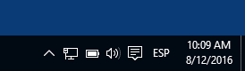